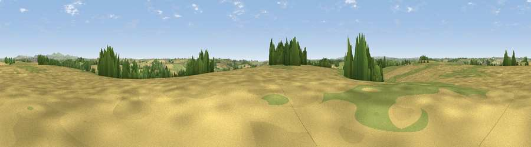

Trebollack Hill
#26351 in England · top 48% of its area beats it · near Ruan LanihorneThe view, rendered

A 360° render of this exact spot computed from the terrain model, tree cover and land cover — summer colours, afternoon light, calibrated against photographs of famous viewpoints. Real trees, hedges and buildings will differ in detail.
The panorama
Grey silhouette: terrain skyline in each direction (720 bearings, Earth curvature and refraction included). Dashed green: skyline with trees (+15 m) and buildings (+8 m) as obstacles. Blue strip: how far the ground is visible on each bearing.
Where the view opens
Wedge length = distance to the farthest visible ground on that bearing (vegetation-aware). Rings at 10, 25 and 50 km.
What fills the view
52% cropland · 39% grassland · 8% woodland · 1% built-up
Angular shares of the visible panorama (visual magnitude), not map area. Landscape diversity 0.43 (0–1 Shannon).
Key numbers
More beautiful places nearby
The staircase of upgrades: each row has a higher view potential than everything closer. Driving times are estimates from straight-line distance, calibrated against real road routing — check an actual route before setting out.
| Place | Direction | Drive | Score |
|---|---|---|---|
| Viewpoint near St. Michael Penkevil | WSW · 1 km | ~4 min | 50.0 |
| Viewpoint near Ruan Lanihorne | SSW · 1 km | ~4 min | 51.0 |
| Viewpoint near Trewithian | S · 5 km | ~11 min | 61.8 |
| Curgurrell Hill | S · 6 km | ~13 min | 71.5 |
| Viewpoint near Portloe | ESE · 8 km | ~16 min | 74.4 |
| Viewpoint near Trethosa | NNE · 12 km | ~22 min | 78.5 |
| Viewpoint near Penhale | NNE · 12 km | ~23 min | 81.7 |
| Viewpoint near Foxhole | NE · 13 km | ~24 min | 84.3 |
50.25646, -4.96472 · source: dobih hill · position refined by local search. Computed location — check access rights before visiting.